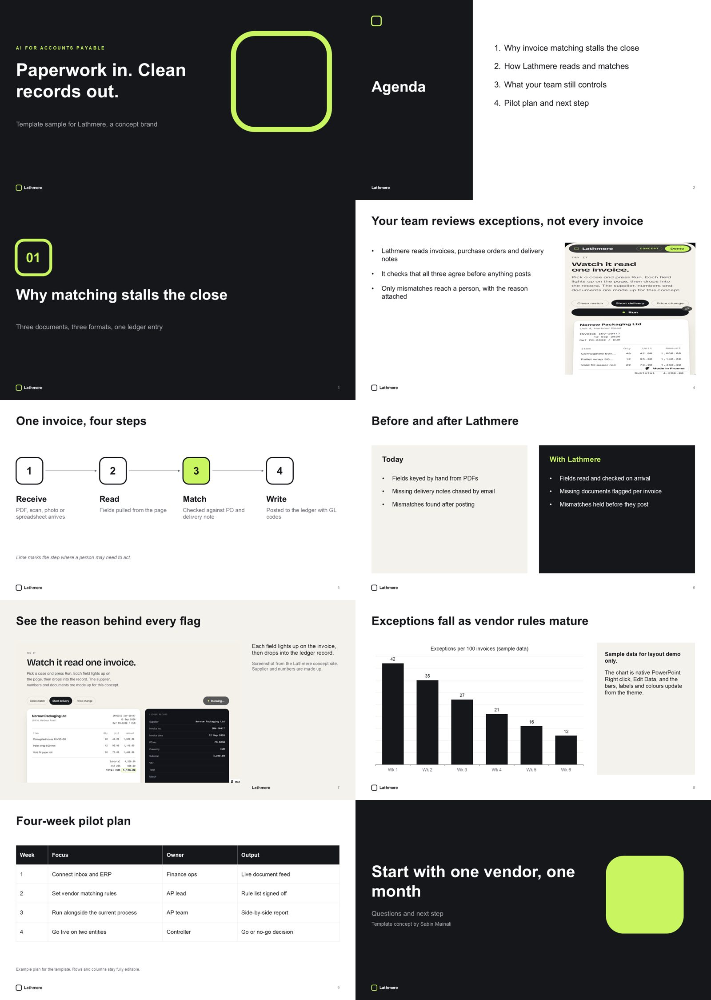

Both samples are self-initiated concepts, not paid client work. They are labelled that way everywhere they appear.
Editable PowerPoint template: LathmereSelf-initiated concept
Made for this application. Lathmere is a fictional finance SaaS (AI for accounts payable). The template has 10 layouts on one slide master: cover, agenda, section, content and image, workflow, comparison, product screenshot, chart, table and closing. Theme colours and theme fonts are set once, so a colour change in the theme updates every slide. Text, shapes, the table and the native chart all stay editable. Each example slide carries a usage note in the speaker notes.

Lathmere brand and websiteSelf-initiated concept
Mark, wordmark, colour system and a one-page site: live sample site / case study.
Sundial Coffee merchSelf-initiated concept
A full badge lockup for large print areas and an icon-only lockup for the cap, because small lettering breaks at small sizes. Same thinking applies to the StepFive cap and shirt. Mockups were made with an AI image tool from fixed logo files. Project page.
| Part | Includes | USD |
|---|---|---|
| Identity | 3 directions, logo system, one-colour and apparel versions, compact guidelines | 1,500 |
| Applications | Website hero/header design, favicon and app icons, cap and shirt artwork | 600 |
| PowerPoint | .potx template, .pptx examples, usage notes, PDF preview | 900 |
| Total | Fixed price, complete scope | 3,000 |
| Milestone | Due | What you get | USD |
|---|---|---|---|
| 1. Directions | Wed 14 Oct | Short kick-off questions, then 3 directions shown on real applications | 750 |
| 2. Logo final | Wed 21 Oct | Chosen direction refined, one-colour, reversed, two-colour, cap and shirt at actual size | 900 |
| 3. Identity and digital | Wed 28 Oct | Type, colours, graphics, guidelines, website hero, favicon and app icons | 600 |
| 4. PowerPoint and handover | Wed 4 Nov | Template, example deck, usage notes, PDF, full file pack | 750 |